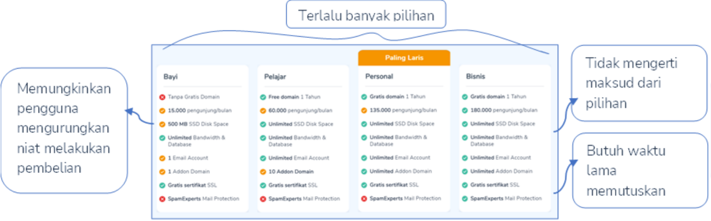
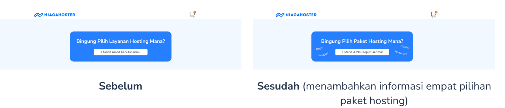

Metode Kuis Bantu Pengguna Ambil Keputusan Cepat dan Tepat — UX Case Study Niagahoster
Studi kasus ini adalah tugas akhir program Virtual Internship Experience oleh Rakamin Academy kerja sama Niagahoster.
Latar Belakang
Dikutip dari www.niagahoster.co.id, Niagahoster adalah perusahaan penyedia layanan website yang berdiri sejak 2013. Niagahoster selalu menjamin kualitas uptime server 99.9%, dukungan CS 24 jam, dan memberikan harga termurah di kelasnya. Perusahaan juga berkomitmen untuk senantiasa memenuhi berbagai kebutuhan pelanggan, baik profesional maupun personal.
Salah satu layanan Niagahoster adalah layanan empat paket hosting yaitu bayi, pelajar, personal, dan bisnis dengan beragam fasilitas. Sayangnya hasil riset menunjukkan persentase pengguna yang menyelesaikan pembelian layanan hosting di halaman checkout menurun.
Masalah
Gambar pilihan paket layanan hosting di Halaman Checkout
Tantangan Desain
Bagaimana kita bisa membuat pengguna memilih layanan hosting sesuai kebutuhan, tanpa harus kesulitan mencari tahu informasi tentang penjelasan setiap layanan, sehingga pengguna bisa checkout lebih mudah dan cepat.
Alur Pengguna
Dalam aspek psikologi kognitif, seseorang mengambil keputusan menggunakan potensi berpikir dalam memahami informasi untuk menjawab permasalahan, yaitu mengambil keputusan tepat dari berbagai pilihan. Ketika informasi sudah mencukupi, pengguna akan memutuskan pilihan yang akan diambil.

Gambar alur psikologi kognitif pengguna dalam mengambil keputusan
Ide Solusi
Identifikasi Kondisi Pengguna
Dalam mengambil keputusan, pengguna membutuhkan informasi paket layanan sesuai kebutuhan. Cara membantu pengguna menemukan kebutuhannya ialah dengan mengidentifikasi kondisi pengguna.
Bagai ingin mengetahui kronologi pembunuhan maka perlu adanya menggali informasi kepada semua saksi. Sama halnya ketika ingin mengetahui kebutuhan pengguna, maka perlu mengajukan berbagai pertanyaan tentang tujuan membuat website. Informasi yang terkumpul akan memunculkan rekomendasi layanan hosting sesuai kondisi pengguna. Metode ini disebut pula sistem kuis.

Gambar wireframe dan alur pengguna melakukan kuis untuk menemukan paket hosting yang tepat
Tambahkan definisi singkat di setiap layanan
Pengguna dapat terbantu mengetahui dengan cepat informasi semua paket layanan hosting dengan memberikan informasi singkat di setiap paket hosting.

Gambar wireframe penjelasan paket hosting
UI Design
Sistem Desain

Halaman Utama

Kuis Cari Paket Hosting
Metode kuis untuk membantu pengguna menemukan paket hosting sesuai kebutuhan adalah ide solusi yang belum diterapkan di Niagahoster.

Usability Testing
Tiga responden menggunakan prototipe website Niagahoster yang telah dibuat. Secara umum, mereka diminta untuk menyelesaikan proses pembelian paket hosting dari dua cara. Pertama, melalui metode kuis. Kedua, memilih paket hosting dari tahap 1 sampai 3.

Hasil usability testing menunjukkan bahwa responden lebih menyukai metode kuis dibanding melalui tiga tahap pemilihan. Menurutnya, metode kuis lebih komunikatif, sangat membantu pengguna menemukan paket hosting sesuai kebutuhan secara cepat. Selain itu, responden menyarankan beberapa bagian yang masih perlu diperbaiki.
Iterasi
Secara umum, responden merasa puas dengan ide solusi yang diberikan. Namun, ada hal yang masih perlu diperbaiki. Seperti memperjelas lagi maksud dari banner kuis dengan menambahkan jenis paket. Alhasil pengguna bisa lebih cepat mengetahui paket hosting apa yang tersedia.
Penutup
Dari hasil riset dapat disimpulkan, ide solusi yang diberikan sangat membantu pengguna menyelesaikan masalah. Metode kuis yang lebih komunikatif menjadi daya tarik pengguna. Pengguna seolah berbicara dengan seorang teman yang mendengar dengan saksama keluhan lalu memberikan solusi.
Alasan lain metode kuis dibutuhkan karena alur yang lebih terarah. Alhasil pengguna tidak bingung akan melakukan apa saja dalam halaman website. Ditambah tidak perlu membaca semua informasi paket layanan yang hanya akan membuang waktu pengguna dalam menentukan pilihan.
Meski demikian, metode kuis ini hanyalah rekomendasi bagi pengguna. Mengikuti rekomendasi maupun tidak, keputusan akhir tetap di pengguna. Informasi mendetail setiap paket hosting tetap diperlukan sebagai bahan pertimbangan dalam membuat keputusan.